vignettes/composition_diagnostics.Rmd
composition_diagnostics.RmdAge and length compositions are often the most informative, and the hardest to fit, data in a stock assessment. {stockplotr} has a set of plots for composition data based on the figures that r4ss makes for Stock Synthesis models. Each plot shows the data in a different way, and most have an equivalent in r4ss:
| Plot | Function | What it shows | Equivalent in other packages |
|---|---|---|---|
| Distributions of observations | plot_composition_distribution(show_expected = FALSE) |
The most intuitive way to look at compositions | r4ss: SSplotComps() subplot 1,
datonly = TRUE
|
| Bubble plot of observations | plot_composition_bubble() |
Cohort strength over time | r4ss: SSplotComps() subplot 2,
datonly = TRUE
|
| Distributions of observed and expected values | plot_composition_distribution() |
An intuitive way to look at fit | r4ss: SSplotComps() subplots 1 and 21 |
| Pearson residuals | plot_composition_residuals() |
Blocks or stripes of misfit among years or bins | r4ss: SSplotComps() subplots 2 and 24 |
| Sex ratios | plot_composition_sexratio() |
Trends in misfit for bins with small proportions, which have small residuals | r4ss: SSplotSexRatio()
|
| Mean age or length (Francis) | plot_composition_francis() |
Trends among years; Francis (2011) TA1.8 data weights | r4ss: SSplotComps() subplots 8 and 9,
SSMethod.TA1.8()
|
| N-EffN comparison | plot_composition_samples() |
McAllister-Ianelli data weights | r4ss: SSplotComps() subplot 7 |
| Residual distribution | plot_composition_residual_distribution() |
Heavy tails, skewness, and outliers; SDNR | |
| Residual patterns | plot_composition_residual_pattern() |
Bias by bin or year, with a runs test | |
| Andre’s plots | plot_composition_andre() |
Mean age at length for conditional age-at-length data | r4ss: SSplotComps() subplot 12 |
| Conditional age-at-length residuals | plot_composition_residuals(conditional = TRUE) |
Misfit by length and age within years | r4ss: SSplotComps() subplot 3 |
Each function can plot fleets separately or summarize all fleets. Use
fleet to choose fleets, and aggregate = TRUE
in plot_composition_distribution() and
plot_composition_sexratio() to combine all years. Panels
are ordered down each column by default, so consecutive years are
stacked vertically and cohorts are easier to follow; use
direction = "h" to order them across rows.
Like the other {stockplotr} plotting functions, the composition plots
take the standard output from convert_output(). Each
function calls prepare_composition_data() to pull out the
composition data, so the plots work with any assessment model whose
compositions convert_output() supports. Compositions are
the rows whose label contains “composition”, such as
length_composition_observed and
length_composition_predicted.
This vignette uses data from the 2019 Big Skate stock assessment for
the U.S. West Coast, the same model used for the r4ss example plots, so
the figures below can be compared directly with the r4ss versions.
bigskate_lencomp holds the length compositions and
bigskate_caal the conditional age-at-length data, both from
convert_output() applied to the output of
r4ss::SS_output():
bigskate_lencomp |>
dplyr::count(module_name, label)
#> # A tibble: 4 × 3
#> module_name label n
#> <chr> <chr> <int>
#> 1 lendbase length_composition_observed 3626
#> 2 lendbase length_composition_pearson_residual 3626
#> 3 lendbase length_composition_predicted 3626
#> 4 lendbase length_composition_sample_size 3626
bigskate_lencomp |>
dplyr::select(label, estimate, year, fleet, sex, part, length_bins) |>
head()
#> # A tibble: 6 × 7
#> label estimate year fleet sex part length_bins
#> <chr> <dbl> <dbl> <chr> <chr> <chr> <chr>
#> 1 length_composition_observed 0.0000993 1995 Fishery_c… fema… 2 20
#> 2 length_composition_observed 0.0000993 1995 Fishery_c… fema… 2 25
#> 3 length_composition_observed 0.0000993 1995 Fishery_c… fema… 2 30
#> 4 length_composition_observed 0.0000993 1995 Fishery_c… fema… 2 35
#> 5 length_composition_observed 0.0000993 1995 Fishery_c… fema… 2 40
#> 6 length_composition_observed 0.112 1995 Fishery_c… fema… 2 45The length compositions are sex-specific.
Fishery_current has separate retained (part =
2) and discarded (part = 1) compositions, which are labeled
“Fishery_current (retained)” and “Fishery_current (discard)”, as in
r4ss. Use fleet = "Fishery_current" to select both.
If Pearson residuals are not supplied,
prepare_composition_data() calculates them assuming a
multinomial distribution,
,
using the sample size. The Big Skate data include the residuals and
adjusted sample sizes reported by Stock Synthesis.
Distributions are the most intuitive way to look at compositions. For sex-specific data, females are shown above zero and males below.
plot_composition_distribution(bigskate_lencomp, fleet = "WCGBTS", show_expected = FALSE)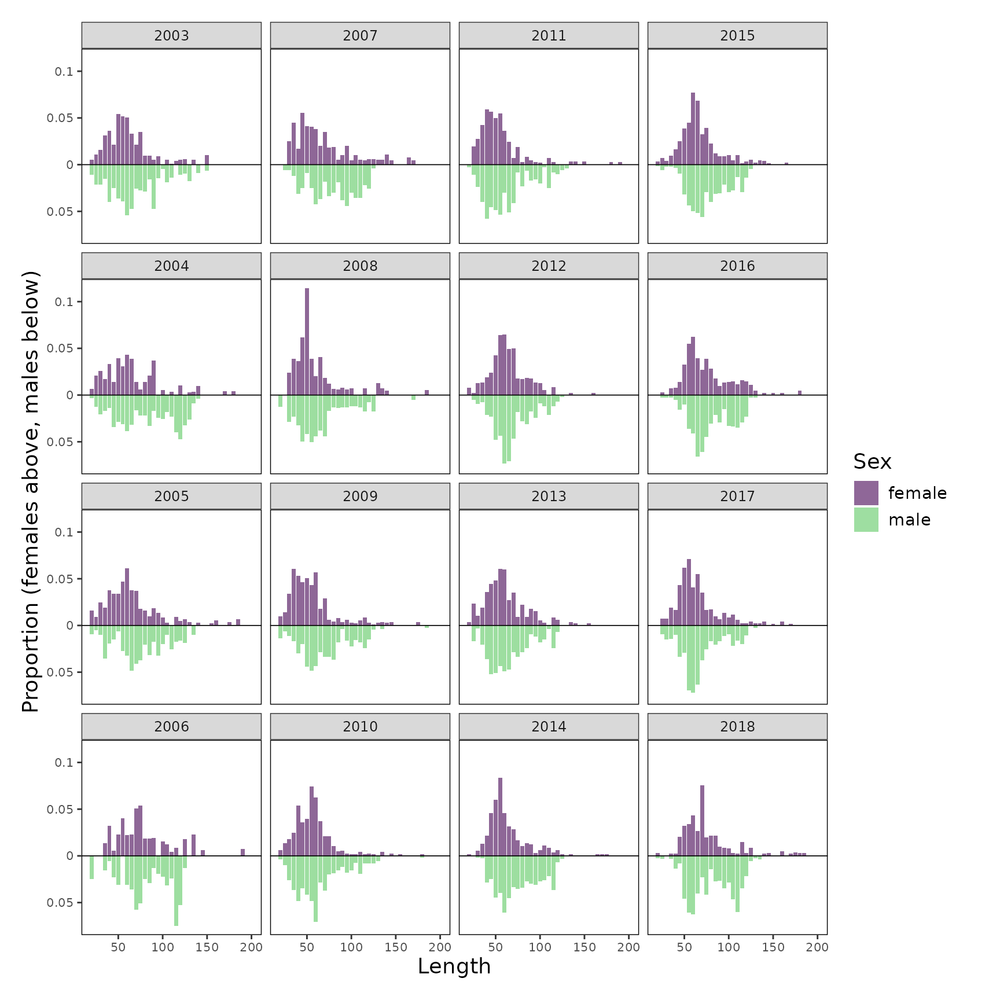
Bubble plots make it easier to see patterns across years, such as strong cohorts moving through the population.
plot_composition_bubble(bigskate_lencomp)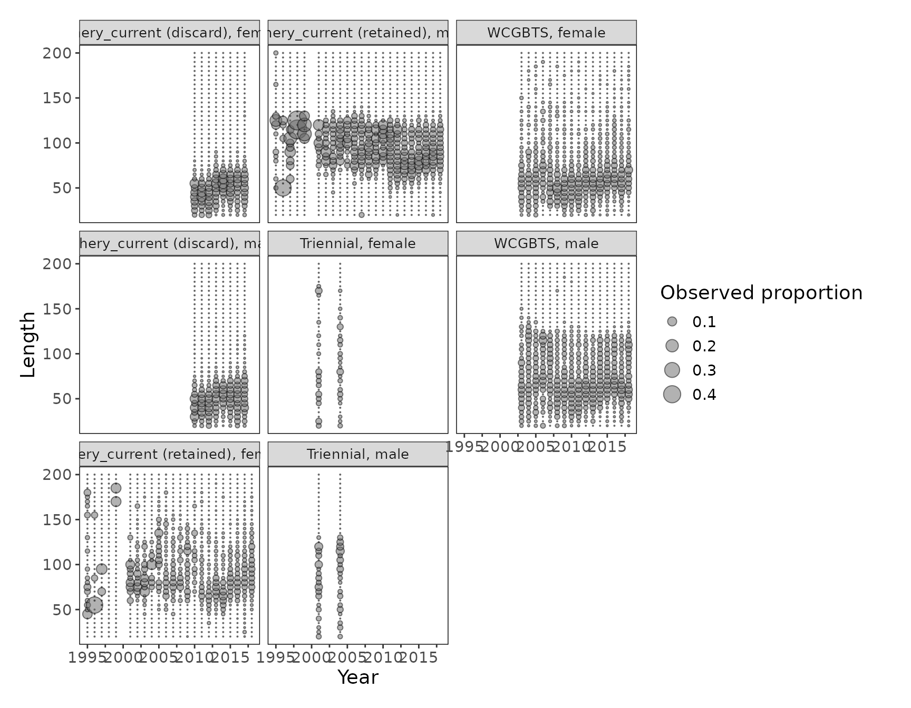
Adding the expected values to the distribution plot shows the fit to each year.
plot_composition_distribution(bigskate_lencomp, fleet = "Triennial")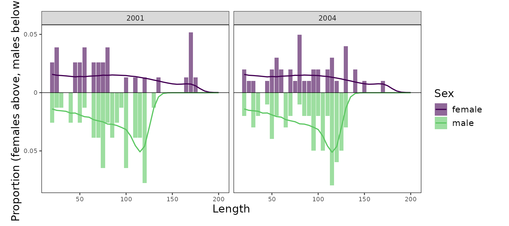
Aggregating across years gives an overview of each fleet. Years are weighted by their adjusted input sample sizes.
plot_composition_distribution(bigskate_lencomp, aggregate = TRUE)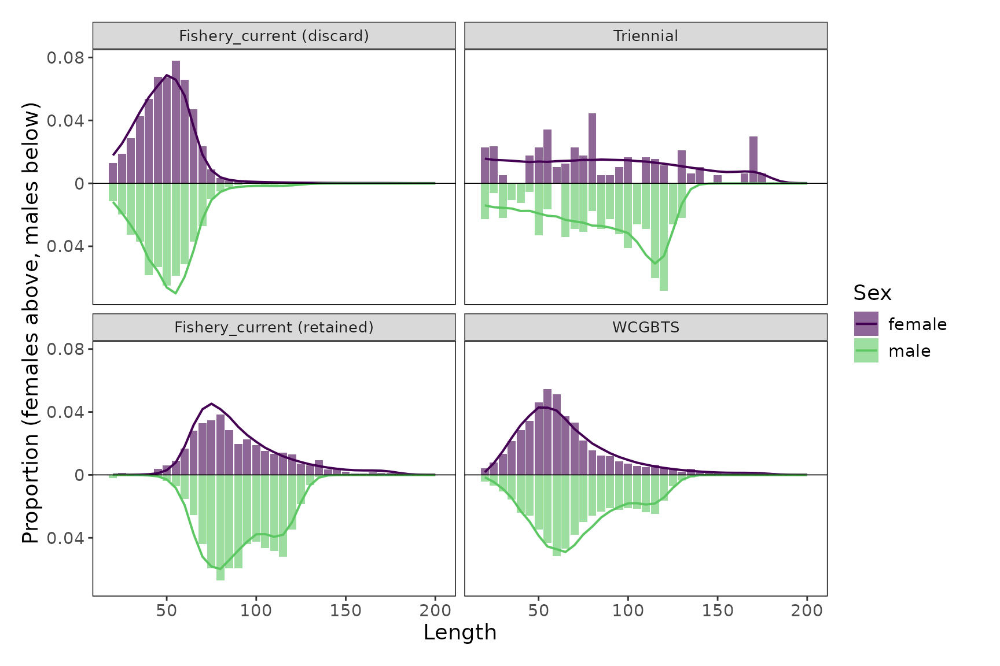
Pearson residuals are a more statistically rigorous way to look at fit. Filled bubbles show where more fish were observed than expected, and open bubbles where fewer were observed. The largest residual in each panel is included in the label.
plot_composition_residuals(bigskate_lencomp)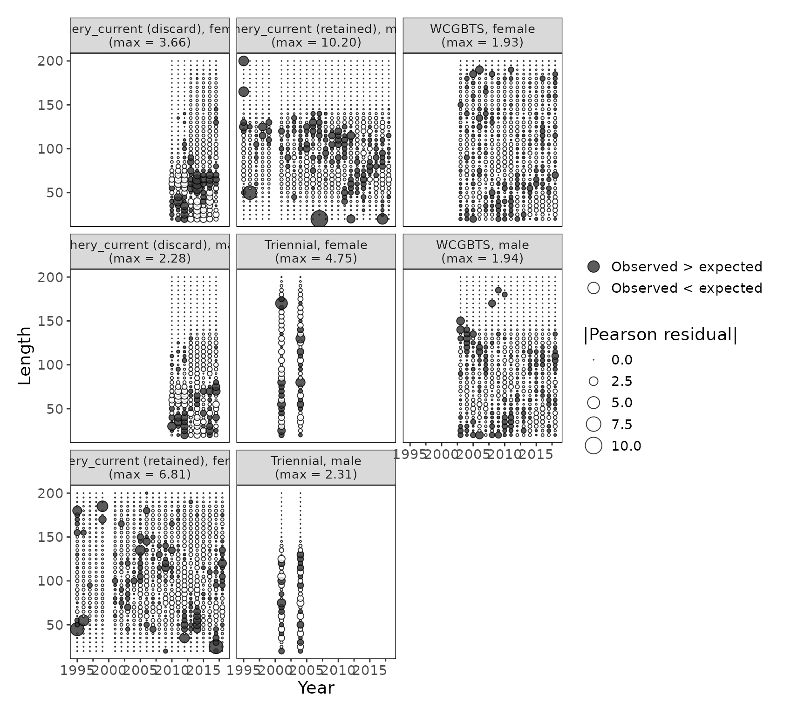
The fraction female in each bin, female / (female + male), can show trends in misfit for bins with small proportions, since those bins have small residuals. Vertical lines are Jeffreys intervals based on the sample size in each bin. For Big Skate, the largest fish are almost all female.
plot_composition_sexratio(bigskate_lencomp, fleet = "WCGBTS")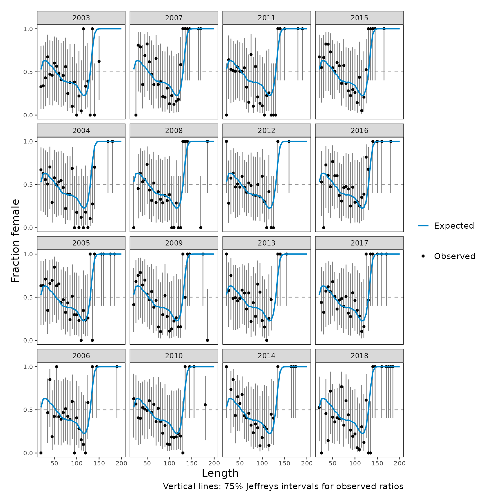
plot_composition_sexratio(bigskate_lencomp, aggregate = TRUE)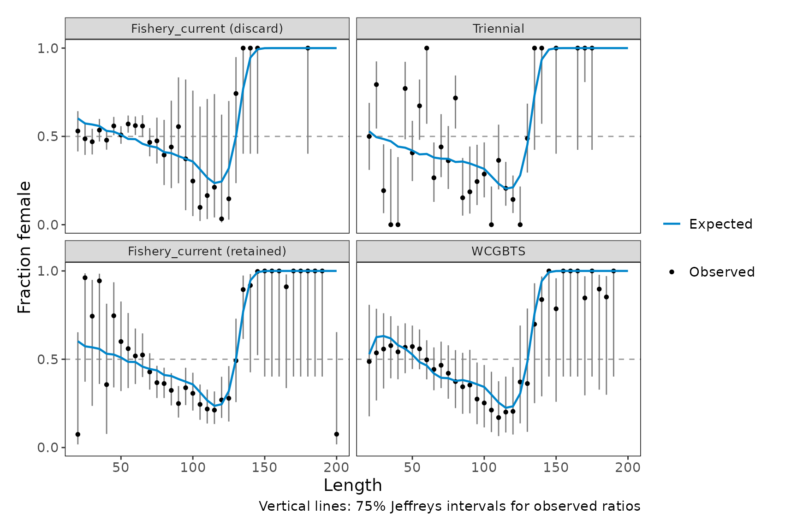
The time series of mean age or length was developed as a diagnostic
for the Francis (2011) data weighting method (TA1.8), but it is also a
useful summary of trends in the data and the fit. Thick intervals are
based on the current sample sizes, and thin, capped intervals show the
result of further adjusting sample sizes by the TA1.8 weight in each
panel label. As in r4ss::SSMethod.TA1.8(), partitions of a
fleet are combined into one composition per year. The weights near one
show that this model was already tuned with the Francis method.
set.seed(1) # the interval for the Francis weight is bootstrapped
plot_composition_francis(bigskate_lencomp)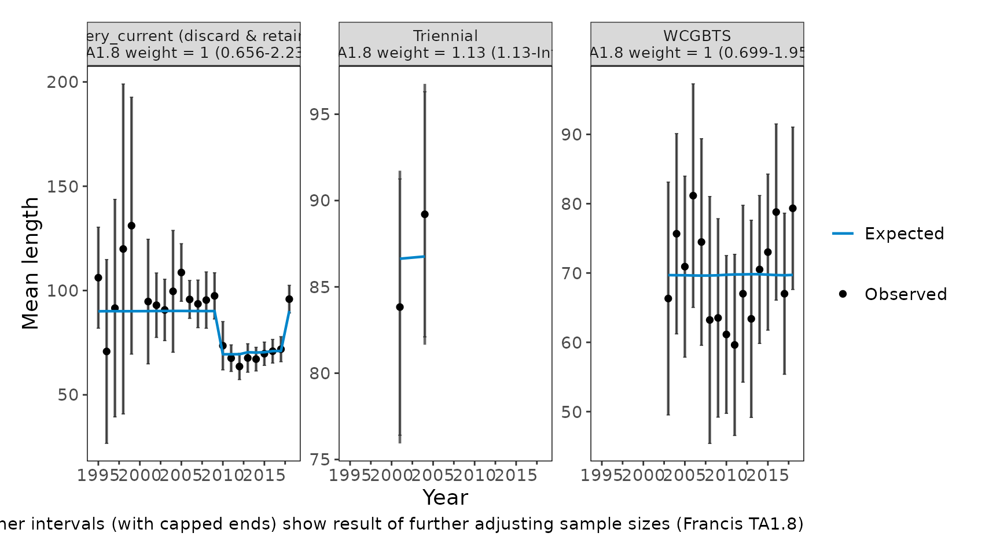
The effective sample size measures how well the model fits each
composition (McAllister and Ianelli 1997). If the input sample sizes
suit the fit, the points should scatter around the 1:1 line. The ratio
of the harmonic mean effective sample size to the mean input sample
size, shown in each panel label, is the McAllister-Ianelli weight. As in
Stock Synthesis, it is calculated across all partitions of a fleet, and
multiplying it by the current variance adjustment gives the
Recommend_var_adj that Stock Synthesis reports.
plot_composition_samples(bigskate_lencomp)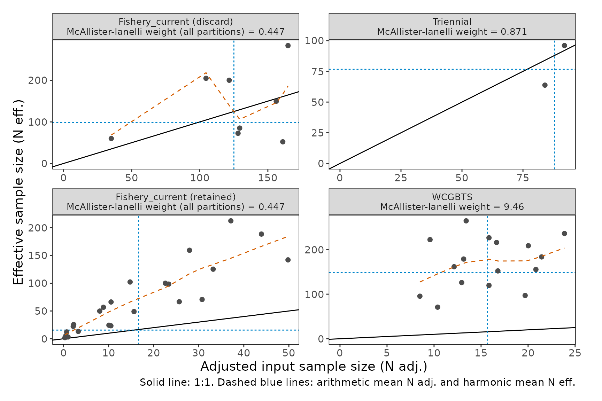
For Stock Synthesis models, the same plot can be made directly from
convert_output() output, using the adjusted input and
effective sample sizes that Stock Synthesis reports:
plot_composition_samples(stockplotr::example_data, comp_type = "length")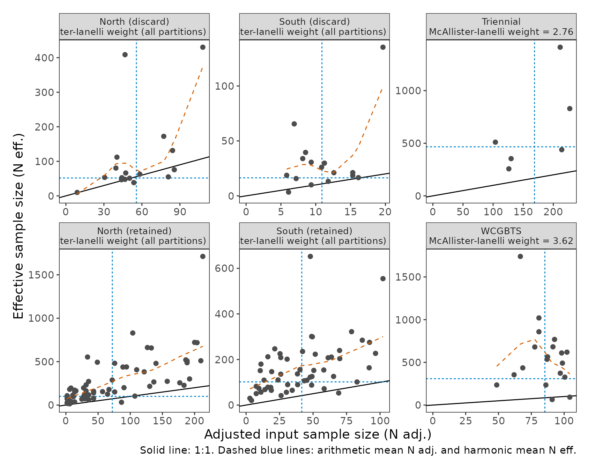
A quantile-quantile plot shows whether residuals have heavier tails than expected. The standard deviation of the normalized residuals (SDNR) is shown in each panel label; values well above one suggest the data are given more weight than the fit supports.
plot_composition_residual_distribution(bigskate_lencomp)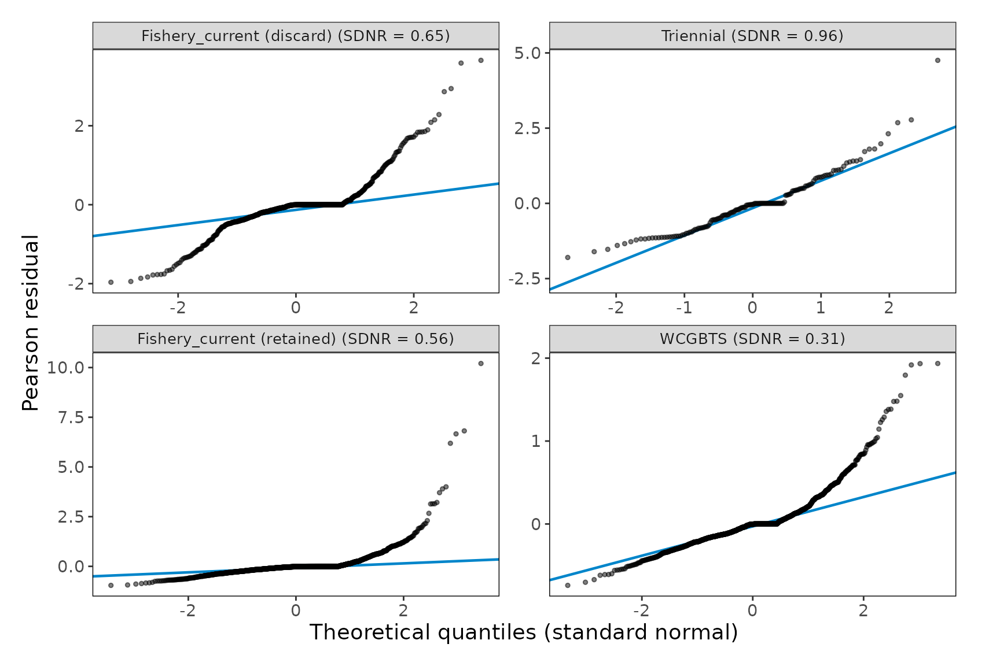
Averaging residuals by bin or year turns stripes in the bubble plot into a single line. Filled points fail a runs test, meaning the residual signs in that bin are not randomly ordered across years.
plot_composition_residual_pattern(bigskate_lencomp)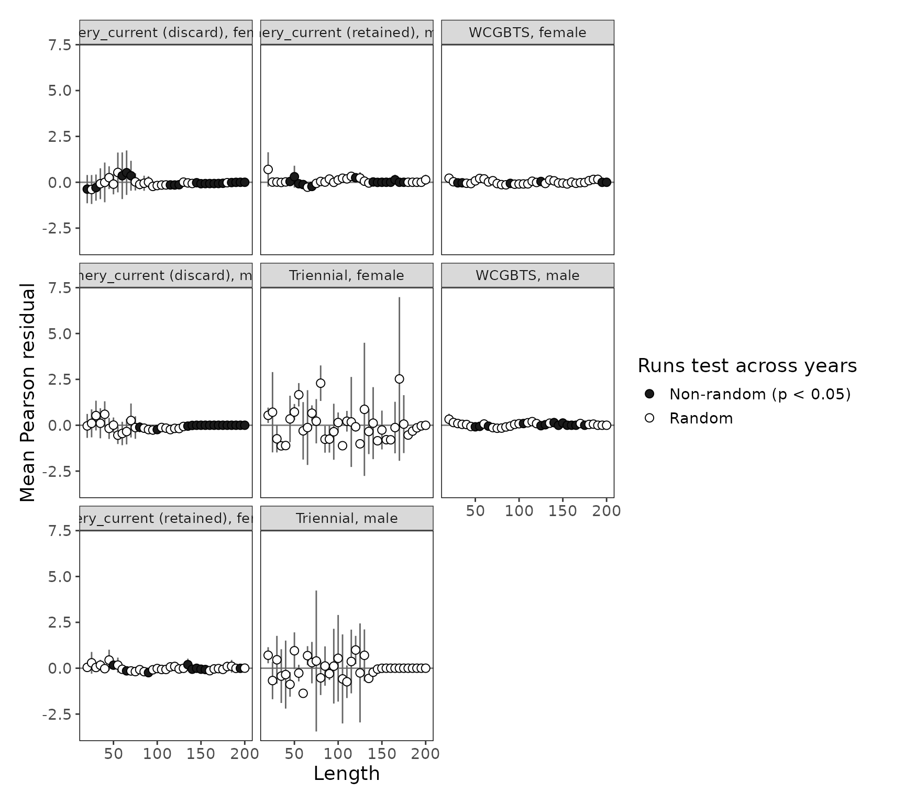
Conditional age-at-length data are age compositions for each length
bin. In convert_output() output they are labeled
conditional_age_composition_*, with the length bin in
length_bins, as in bigskate_caal. Use
conditional = TRUE in
prepare_composition_data() and
plot_composition_bubble(). The Big Skate conditional data
are single-sex compositions, which are normalized separately for each
sex.
plot_composition_andre() makes “Andre’s plots” from
r4ss: the observed and expected mean age in each length bin (left), and
the standard error of the mean age (right), one row per year and
sex.
caal_recent <- dplyr::filter(bigskate_caal, year %in% 2016:2018)
plot_composition_andre(caal_recent, fleet = "WCGBTS")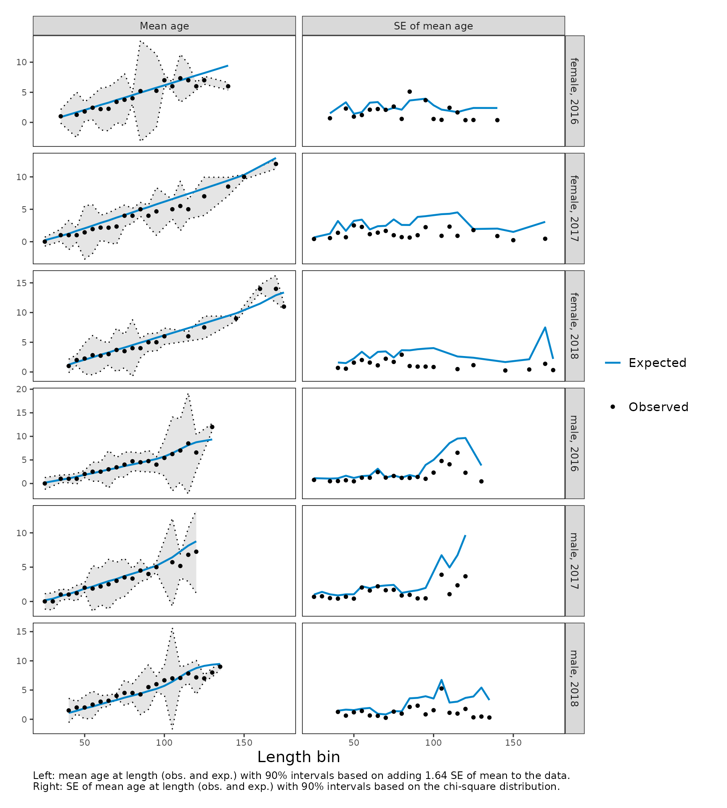
Pearson residuals for conditional data are plotted by length bin and age for each year:
plot_composition_residuals(caal_recent, fleet = "WCGBTS", conditional = TRUE)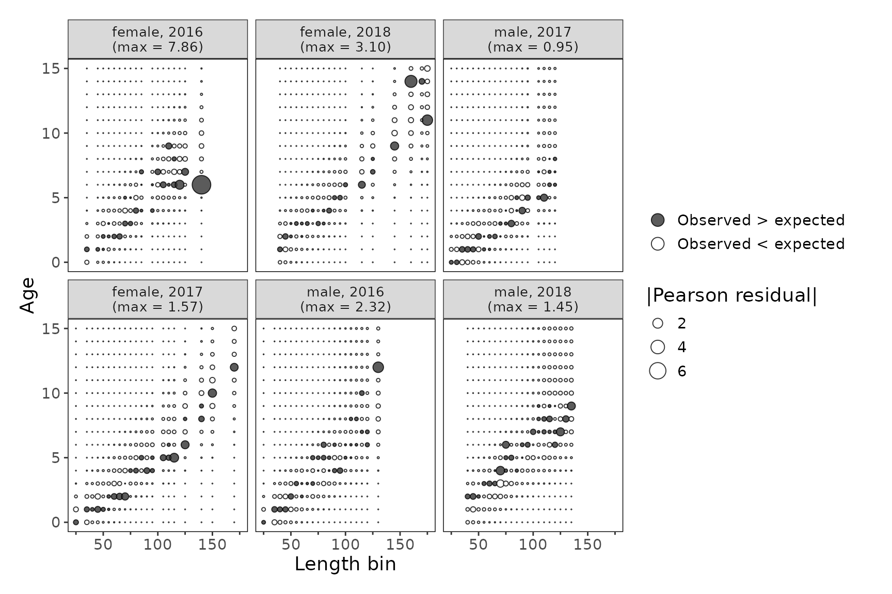
With Stock Synthesis, convert the output of
r4ss::SS_output() with convert_output(). The
composition data come from the lendbase,
agedbase, and condbase elements, including the
Pearson residuals and adjusted sample sizes reported by Stock Synthesis.
The Francis weights match r4ss::SSMethod.TA1.8(), and the
effective sample sizes and McAllister-Ianelli weights match those
reported by Stock Synthesis.
replist <- r4ss::SS_output("path/to/BigSkate_2019")
std_output <- convert_output(replist)
plot_composition_distribution(std_output, comp_type = "length", fleet = "WCGBTS")
plot_composition_francis(std_output, comp_type = "length")
plot_composition_andre(std_output, fleet = "WCGBTS")The same functions work with output from the other models that
convert_output() supports. With FIMS, the estimates can
also be passed directly:
estimates <- FIMS::get_estimates(fit)
plot_composition_residuals(estimates, comp_type = "age")
plot_composition_francis(estimates, comp_type = "length")FIMS reports years as indices (year_i); add a
year column to plot calendar years. FIMS estimates do not
currently include composition sample sizes. Add an n
column, or supply Pearson residuals in a pearson column, to
get residuals and intervals.
Francis, R.I.C.C. (2011). Data weighting in statistical fisheries stock assessment models. Canadian Journal of Fisheries and Aquatic Sciences 68: 1124-1138.
McAllister, M.K., and Ianelli, J.N. (1997). Bayesian stock assessment using catch-age data and the sampling-importance resampling algorithm. Canadian Journal of Fisheries and Aquatic Sciences 54: 284-300.
Taylor, I.G., Gertseva, V., Stephens, A., and Bizzarro, J. (2019). Status of Big Skate (Beringraja binoculata) off the U.S. Pacific Coast in 2019. Pacific Fishery Management Council, Portland, OR.